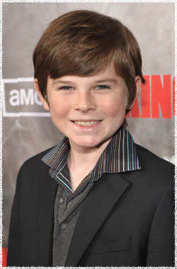

Чендлер Риггз
 Карл Граймс (актёр Чендлер Риггз) - сын Рика и Лори. Вместе со своей мамой и напарником отца Шейном пытался попасть в город Атланта, но не смог сделать это. Поэтому остался в лагере у окраины города.
Чендлер Риггз (Chandler Riggs) - родился 27 июня 1999 года в США. Начинающий американский актёр из Атланты, штат Джорджия. Замечен в фильмах Невиновный (Wronged Man) и Двигайся ниже (Get Low).
Десятилетний Чендлер Риггз совершил свой профессиональный дебют в возрасте восьми лет с театра Звезды на Atlanta's Fox Theater в постановке The Wizard of Oz followed by Oklahoma. После нескольких коммерческих ролей, он появился в телевизионном фильме Wronged Man (Невиновный) и также в его дебютном художественном фильме от Sony Pictures Classics - Get Low (Двигайся ниже). На данный момент играет одну из главных ролей в сериале Ходячие мертвецы. Чендлер увлекается видеоиграми и чечёткой.